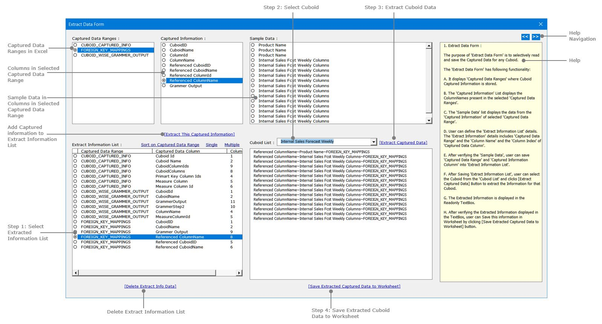

Grammer Generation
-
-
Cover Page
Grammar Generation
-
1. Introduction
To read unstructured data from different sources and package it into Structured format we need a Grammer for every entity in data.
Generate the Grammer is multi-step process that needs following information to be stored :
Step 1: Need to define the Source of the entity.
Step 2: Need to define the relationship of entity with another entity.
Step 3: Need to define the Grammar Rule to generate the Grammar.
Step 4: Extract the Grammer based on above information stored.
Pre-Requisite
We have the Target Data Structure available and for each column in the Target Data Structure we need to define the Grammer.
The Target Data Structure is available as Tables in Excel Worksheet in structured format.
The Target Data Structure is stored as Cuboid in Boardwalk Collaboration Platform it's structure is available through HTTP Request.
-
2. Define the Source of Entity.
Following queries are answered in this Step :
1. What is the Source?
2. What are the columns in the Source?
3. Is there any Measure Column in the Source? If Yes what is the Measure Column Name?
4. What are the Measures defined in the Source?
5. What are the Ids of entities defined in the Source?
In this step open Capture Cuboid Data Form by clicking Ribbon Button in Excel.
Enter the URL that points to Boardwalk Collaboration Platform Server.
Click GetDataFromServer button to download the list of Cuboid and it's Columns into the Form.
The Cuboid List displays the list of Cuboid Id and Cuboid Names present on BCP Server.
When Cuboid is selected from the Cuboid List, the corresponding Cuboid Columns are displayed in Columns List.
Setting Primary Key:
Select One or More Columns from the Column List and click Set Primary Key button to set the Primary Key Columns Textbox in the form.
The corresponding Primary Key Column Ids are populated in the Primary Key Column Ids Textbox in the form.
Setting Measure Column:
Select a Columns from the Column List and click Set Measure Column button to set the Measure Columns Textbox in the form.
The corresponding Measure Column Id is populated in the Measure Column Id Textbox in the form.
The form also displays the List of Measures in the list box.
Setting Foreign Key:
Click Set Foreign Key... button that opens Column References Settings form to set the Primary Key References in the Cuboid. More details about this form is given in next topic.
All above information captured must be saved by clicking Capture Data button in the form.The form also saves list of Column Names, Column Ids, List of Measures in Captured Data. All saved captured data are listed in Captured Data list in the form.
User can select a Captured Data from the list and display the details in Form Interface by clicking Display Data In Form button.
To delete the captured data from the list, user need to select a Captured Data and click Delete Captured Row button.
-
3. Define the relationship of entity with another entity.

-
4. Define Grammar Rule to generate the Grammar.

-
5. Extract the Grammar based on information captured.

-
6. Downloads and Links and Sources